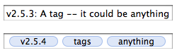
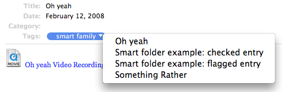

The New Tags
The New Tags
Introduction
Journler 2.5.4 introduces a significant change to its handling of tags. In previous versions of Journler, tags were simply a string of text. You edited an entry's tag attribute and typed whatever you wanted. It could be a sentence, a phrase, or keywords separated by commas, semicolons or a mixture of the two. It was left to the user to format that text in a way most useful to him or her. Beginning with Journler 2.5.4, tags are formatted in a precise manner which renders them visually and programmatically distinct from one another. A tag is now a single word or phrase visually encompassed by a blue lozenge and separated from the other tags associated with an entry. Tags are tokens. For example:
What happened to my old tags?
In order to facilitate to the move from the old style tags to the new style tags, Journler 2.5.4 also introduces the comments entry attribute. Because there is no way to determine in every case how a user formatted his or her tags for conversion to the new format, Journler instead moves the old tags into the new comments attribute and leaves the new tags blank.This means that your old style tags have been renamed comments while the new style tags are simply called tags.
If you don't see the comments attribute in the entry list it may simply be invisible. From Journler's View > Entries List > Columns menu make sure the Comments item is checked on.
All of your smart folders and filtering will still work. This change is at the user interface level only. When you click on a smart folder that had been set up to collect entries with certain tags, it is now set up to collect entries with the same set of comments. When you perform live filtering on your entries, filter for comments instead of tags.
For information on converting your old style tags to the new style tags so that you can filter and build smart folders for them, read on to the last section.
Advantages of the new tags system
ExpectationsThere are many advantages to Journler's new tags. Expectations play a large role. Properly speaking, Journler's old tags weren't really tags. Users familiar with de.lico.us, technorati and tag clouds have come to expect the words "tags" to carry a precise meaning. The tags implementation in Journler 2.5.4 more closely fits that meaning.
Autocompletion
The new implementation supports autocompletion.
Because Journler could not know what to expect when the user edited the older style of tags,
it was not possible to offer autocompletion. Should Journler complete a word? A sentence?
Up to a comma or semicolon? Because the new tags are distinct entities, however,
when the user begins typing Journler can immediately search its internal database of known tags
and offer completions to the user given the letters already typed.

Entry linking
One of the most powerful advantages of the new tags implementation is cross referencing of entries that share the same tags.
You are now able to click the blue lozenge surrounding a tag to see a list of every other entry in the journal
that has also been tagged with the same word or phrase. Selecting an entry from the list jumps to it in Journler's browser.
Upcoming
Future versions of Journler will expand on the new tags implementation to offer a tag cloud,
entries organized by tags and other ways of accessing one's entries through tags instead of folders or dates.
Converting old style tags to new style tags
Depending on how you used the old style tags it may be to your advantage to convert them to the new style tags. If you kept your tags distinct from one another, separating them with commas or in an otherwise consistent manner and using the same tags repeatedly, the news tags implementation will definitely be an advantage to you. If instead you wrote sentences or phrases and did not often repeat the same text, you may want to keep that information in the comments attribute. Commenting, after all, better describes what you were doing in the first place.NovaScotian from the Journler forums has been kind enough to write an Apple Script to help you convert your old style tags to the new style. Download the Apple Script
Place the script in either your Home/Library/Scripts/Journler folder or your Home/Library/Scripts/Applications/Journler folder and restart Journler so that you can use it directly from the Scripts menu in the program.
The script works only on the entries you have selected in your journal, allowing you to experiment for the best results. Specify the character you use to distinguish your tags and the script converts the comments to tags while also leaving the comments in place. For example, if you specify the comma as your distinguishing character, and an entry's comments are "one, two, three", the script will convert the text into three distinct tags: [one] [two] [three].
Some cleaning up may be necessary afterwards, and you may need to convert some of the tags manually. Before clearing out the comments field don't forget to change any smart folders that had been targeting the old style tags and will stop working if you clear the comments field. It's a little bit of work but well worth it if you are a diligent tagger.